- fish of the day 21.07.2026
- Platycephalus bassensis, southern sand flathead
-
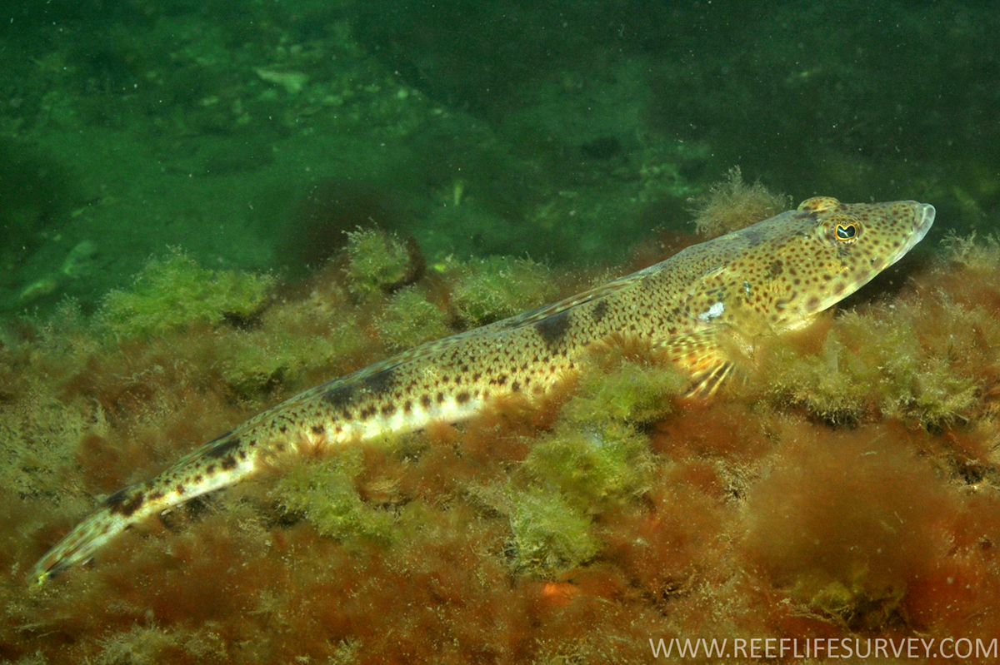
- fish of the day 20.07.2026
- tetraodon schoutedeni
-
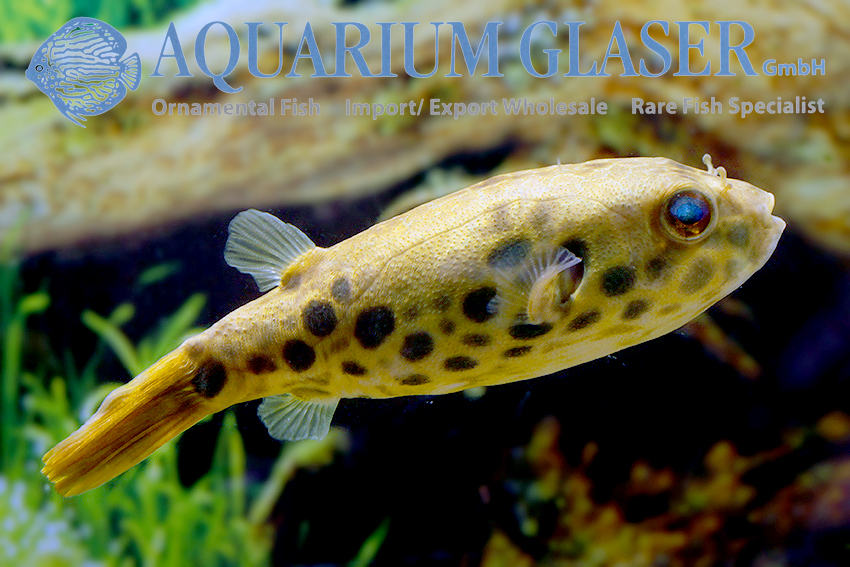
- fish of the day 19.07.2026
- Geophagus brasiliensis, Pearl cichlid
-
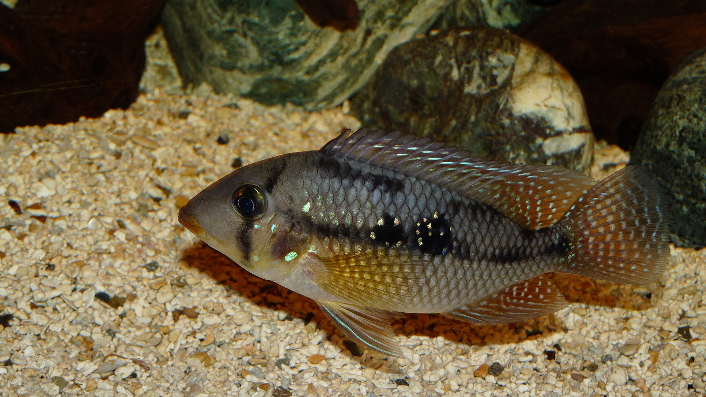
- fish of the day 18.07.2026
- Pterophyllum scalare, angelfish
-
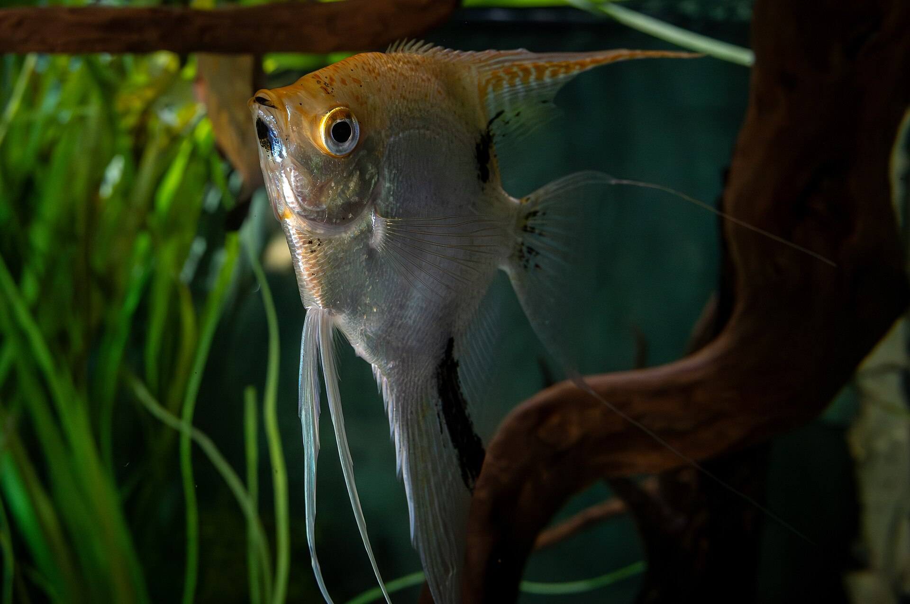
- fish of the day 16.07.2026
- Neoarius graeffei, Blue catfish
-
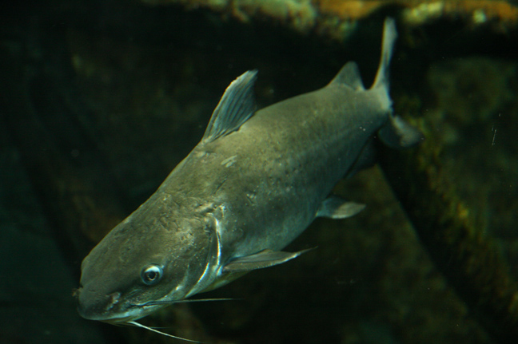
- fish of the day 15.07.2026
- Clarias batrachus, Walkign catfish
-
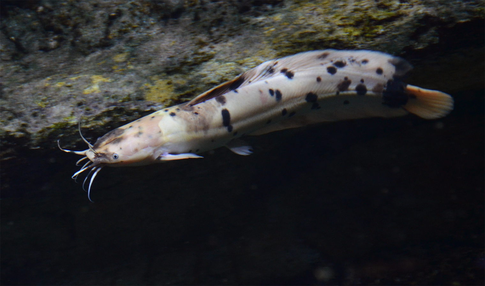
- fish of the day 14.07.2026
- Puntioplites falcifer
-
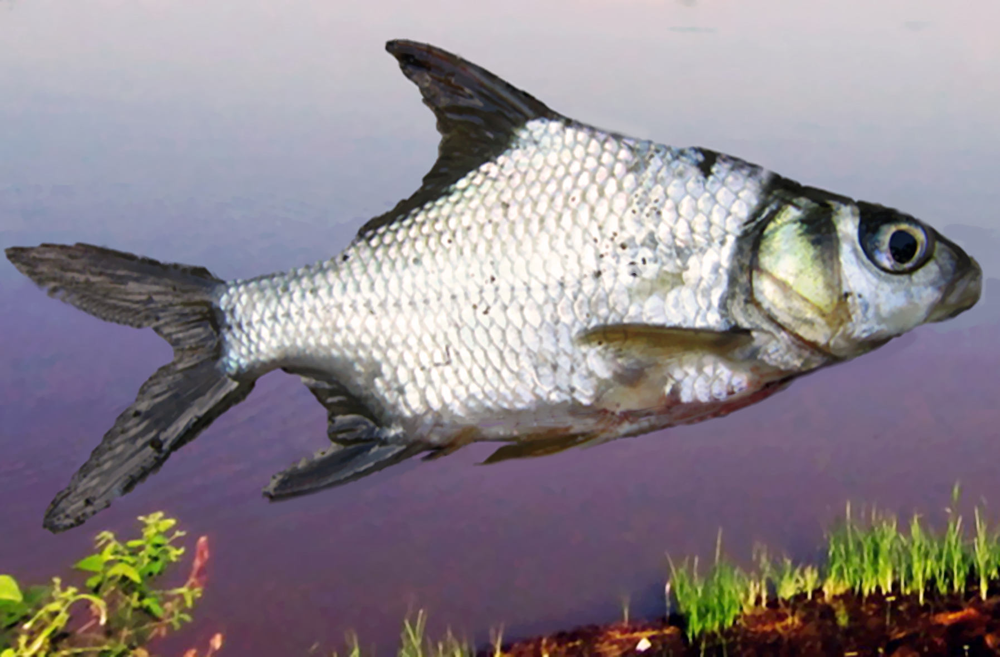
- fish of the day 13.07.2026
- Pomacanthus asfur, Arabian angelfish
-
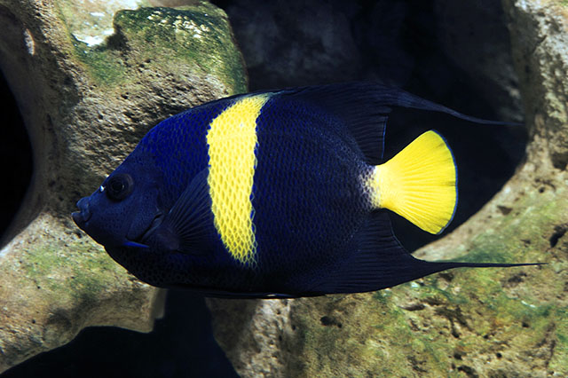
- fish of the day 12.07.2026
- Squatina japonica, Japanese angelshark
-
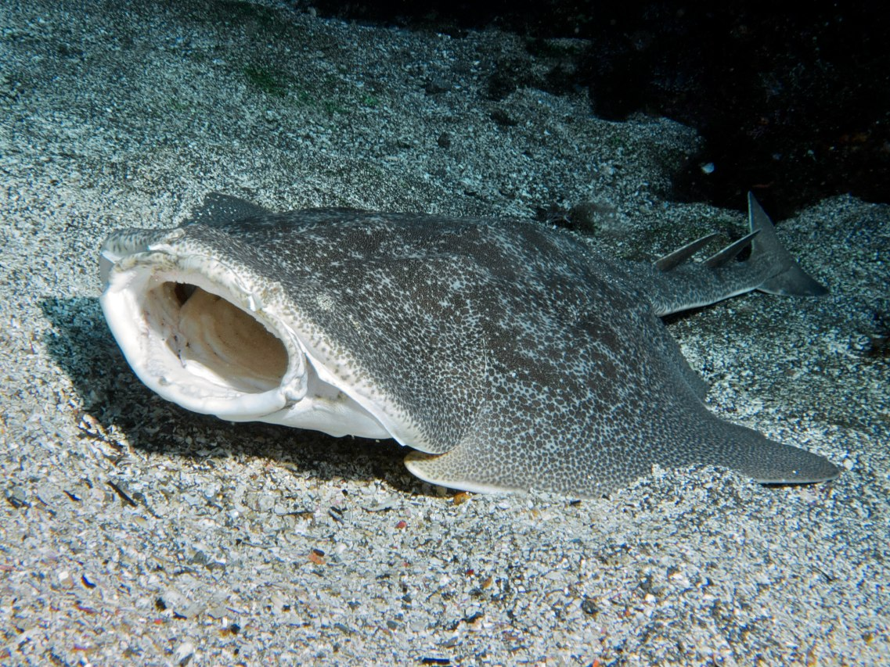
- fish of the day 11.07.2026
- Centromochlus schultzi
-
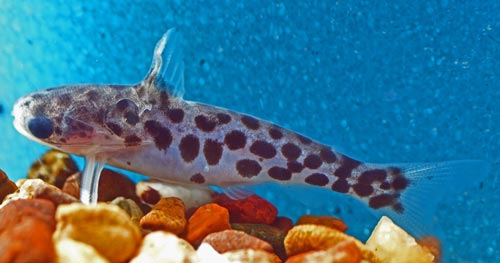
- fish of the day 10.07.2026
- Centropyge fisheri, orange angelfish
-
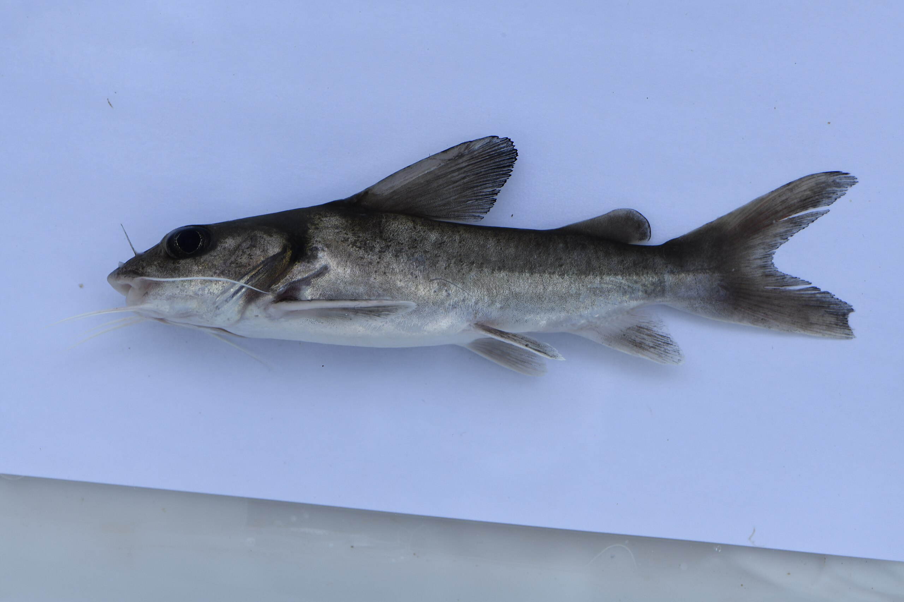
- fish of the day 09.07.2026
- Atherinella brasiliensis, Robust silverside
-
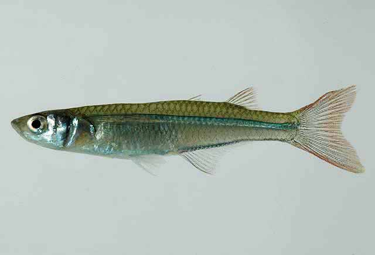
- fish of the day 08.07.2026
- Panaque suttonorum, blue-eye panaque
-
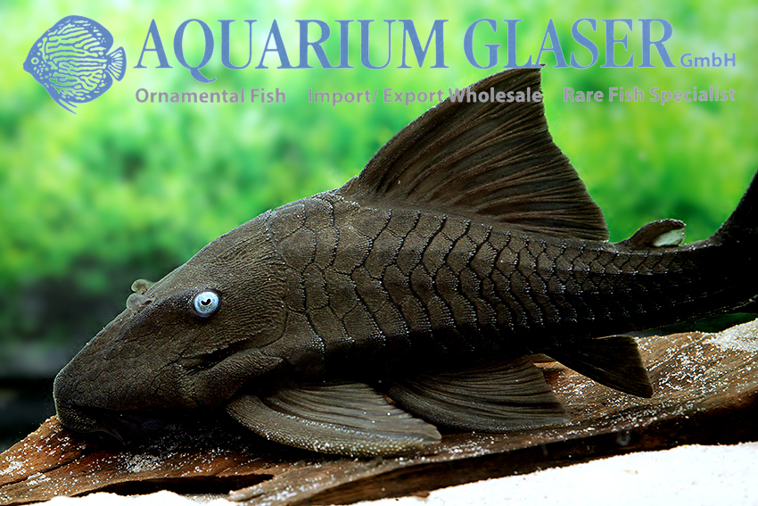
- fish of the day 07.07.2026
- Imparfinis piperatus
-
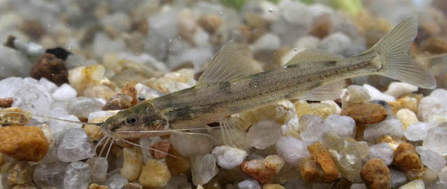
- fish of the day 06.07.2026
- Glossogobius giuris, tank goby
-

- fish of the day 05.07.2026
- Triplophysa ferganaensis, Fergana stone loach
-

- fish of the day 04.07.2026
- Petrocephalus boboto
-

- fish of the day 03.07.2026
- Prionurus biafraensis, Biafra doctorfish
-

- fish of the day 02.07.2026
- Siganus vulpinus, foxface rabbitfish
-

- fish of the day 01.07.2026
- Sewellia lineolata, reticulated hillstream loach
-

fish of the year

fish of the May results